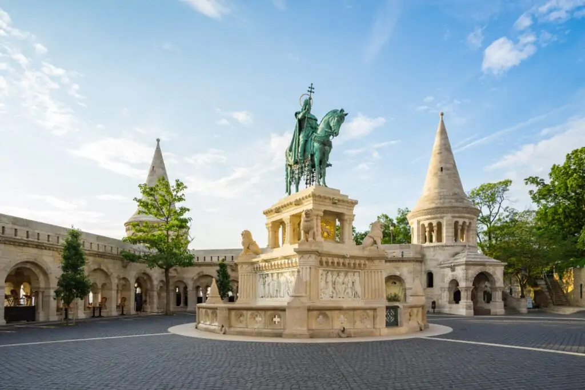

Avrupa’nın en güzel şehirlerinden biri olan Macaristan’ın başkenti Budapeşte ziyaretçilerini büyüleyen bir güzelliğe sahiptir. Zengin tarihi yapısıyla adını şehrin Buda ve Peşte yakalarının birleşimi ile almıştır. Gündüzü ayrı gecesi ayrı güzellikte olan şehir görenleri kendine hayran bırakan cinstendir. İki yakayı birbirine bağlayan nehirde tur yaparak şehrin en güzel noktalarını gözlemlemek mümkün. Manzarası, mimari yapıları ve zengin tarihi ile harmanlanmış bu şehri Budapeşte gezi rehberi aracılığıyla yakından tanıma fırsatı bulacaksınız.
Tuna nehrinin incisi diye adlandırılan Budapeşte nerede sorusunun cevabını yazımızın içerisinde bulabilirsiniz. Şehir Macaristan’ın kuzeyinde yer almaktadır. Orta Avrupa’nın ikinci en büyük şehri olan Budapeşte 1.7 milyonluk bir nüfusa sahiptir. Ülkenin siyasi, ekonomik ve ticari olarak da başkentliğini yapmaktadır. Uzun yıllar boyunca iki farklı şehir olan Buda ve Peşte nehrin üzerinden gecen Zincirli köprünün yapımıyla birbirine bağlanarak tek bir şehir olarak yönetilmeye başlanmıştır.
Bu güzel şehri görmek isteyip de Budapeşte’ye nasıl gidilir diye düşünenler için Budapeşte gezi rehberi sizler için araştırdı. Budapeşte konumu nedeniyle ulaşımı kolay bir şehirdir. Ayrıca turistik olması ve turistler tarafından çok fazla rağbet görmesi şehre ulaşımı daha da kolaylaştırmıştır. Budapeşte havalimanı merkeze 16 km uzaklıkta olup merkeze ulaşımı da kolaydır. Havaalanındaki 2 numaralı terminal binasında A ve B bölümleri tüm tarifeli uçak seferleri için kullanılır. 2A Schengen bölgesi olarak kullanılırken 2B ise Schengen harici ülke ve kıtaların ulaşımı için kullanılır. Ülkemizden hava yolu ile aktarmalı ve aktarmasız uçuşlar mevcuttur.
Vaktini yolda harcamak istemeyenler için hava yolu ulaşım aracı iyi bir seçim olacaktır. Ancak doğal güzelliklere tanık olmak isteyen yolculuk yapmayı sevenler için tren ve otobüs gibi kara yolu ulaşım araçları daha uygun olacaktır. Hava yolu ulaşımına oranla çok daha ekonomik bir yolculuk olacaktır. Trenle ulaşım Orta ve Doğu Avrupa’nın her ülkesinden düzenli olarak tren seferi yapılır. Otobüsle seyahatlerde ise terminaller kent merkezinin dışında kalmaktadır.
Plânlarınızda Budapeşte’yi gezip görmek var ancak Budapeşte’ye ne zaman gidilir diye düşünmekten kendinizi alamıyorsanız doğru adrestesiniz demektir. Budapeşte gezi rehberi bu şehrin ziyaret edilme dönemlerini sizinle paylaşacaktır. Budapeşte iklim olarak nemli karasal iklime sahiptir. Bu nedenle yıl boyunca genelde soğuktur. Ancak kış aylarında da turistlerin kente ilgisi yoğundur. Şehrin termal kaynaklara sahip olması nedeniyle Aralık ve Şubat ayları arasında da turistlerin ziyaret noktalarından biridir.
Baharın gelişiyle birlikte Budapeşte için doğal güzelliklerin zirvede olduğu dönem başlar. Şehirde düzenlenen festivallerle birlikte kentin kalabalıklaştığı dönemdir. Yaz mevsimi zaman zaman yağış alsa da genellikle güneşlidir. Budapeşte en yoğun günlerini yaz aylarında yaşar. Tarihin meraklıları, gezmeyi ve eğlenmeyi sevenler için en ideal dönem yaz aylarıdır diyebiliriz. Havaların etkisiyle mekanlarda düzenlenen etkinliklerde yaz aylarında artış gösterir. Örneğin Budapeşte Uluslararası Şarap Günleri düzenlenmektedir. Festivalde şarap taşımlarının yanı sıra konser gibi etkinlikler de yer alır. Yine Ağustos ayında düzenlenen Sziget Festivali kapsamında konser organizasyonları yapılır.
Budapeşte gezi rehberi olarak sizler için şehrin en iyi destinasyonlarını derledik. Budapeşte Orta Avrupa’da tarihiyle en zengin şehirlerin başında gelir. İki yakadan oluşan şehri Tuna nehri taçlandırmaktadır. Buda tarihi alanlarıyla Peşte ise daha modern yapılarıyla birbirini tamamlar. Bu iki yakayı gezmeden önce bir planlama yapmak zamanınızı daha verimli kullanmanızı sağlar. Listede Budapeşte gezilecek yerler içinde başı Buda Kalesi çeker. Buda Kalesi mimari yapısıyla görenleri kendisine hayran bırakır. Günümüzde kalede Ulusal Galeri ve Macar Askeri Tarih ve Müzik müzeleri yer alıyor. Kalenin hemen yanında yer alan Trinity Meydanı, Matthias Kilisesi ve Balıkçı Tabyası ziyaret edilecek diğer yerlerdir.
Milenyum Anıtı’nın bulunduğu Kahramanlar Meydanı Macarların Avrupa‘ya gelişlerinin 1000. Yıldönümünde inşa edilmesi nedeniyle gezginlerin en çok ilgisini çeken önemli yapılardandır. Yaz Müzik Festivali’ne ve Noel pazarına ev sahipliği yapması ve mimari yapısıyla ünlenen Vajdahunyad Kalesi mutlaka görülmesi gereken yapılardan biridir.
Kent, Nazi ve Sovyet yönetimlerinin izlerini hala taşımaktadır. Momento Park ve Terör Evi Müzesi bu dönemlere ait bilgi edinmek için görülmesi gereken yerlerdir. Kenti ayaklarınızın altında görmek isterseniz özellikle aksam saatlerinde mutlaka Gellert Tepesine veya Zincir Köprüye çıkmalısınız. Daha huzurlu bir tatil hayal edenler için Margaret Adası güzel bir tercih olacaktır.
Bir yakanın tarihi zenginliği diğer yakanın modern yapısı ziyaretçilerine dolu dolu bir tatil sunuyor. Bu şehirde gezginlerin sıkılmalarına imkân yok. Sosyal açıdan her insanın zevkine uygun aktiviteler mevcuttur. Kültürel ve sosyal zenginliği olan Budapeşte’de ne yapılır? Sorusunun cevabını Budapeşte gezi rehberi olarak şöyle sıralayabiliriz;
Budapeşte içerisinde daha birçok güzelliği içinde barındıran bir şehirdir. Her bir sokağı ve caddesiyle sizleri kendine hayran bırakacaktır.
Budapeşte’de ulaşım için şehrin en gelişmiş konularından biridir diyebiliriz. Budapeşte gezi rehberi ulaşım seçeneklerini bir araya getirdi. Şehir içinde otobüs seferlerinden yararlanılabilir. Havaalanından 16 km uzaklıkta olan kent merkezine otobüs yardımıyla gitmek oldukça ekonomik olacaktır. Daha konforlu bir ulaşım içinse resmi izni olan Fötaxi ve MiniBUD hizmet vermektedir. Bunun dışında havaalanından hareket eden otellerin ulaşım araçları vardır. Bu araçlarda ulaşım için bir diğer alternatiftir.
Şehirde kalacağınız oteli merkezden seçmeniz halinde birçok noktaya yürüyerek ulaşabilirsiniz. Kent içinde troleybüs, tramvay, otobüs ve metro gibi ulaşım seçenekleri mevcuttur. Budapeşte gezi rehberi oluştururken daha ekonomik bir ulaşım seçeneği arıyorsanız Big Bus ve Giraffe tarafından düzenlenen şehir turlarına katılabilirsiniz. Bu turlar 24 saatten 72 saate kadar sürebilir. Big Bus otobüsleri 20 noktada, Giraffe otobüsleri ise 53 noktada duraklamaktadır.
Macaristan uzun süre Osmanlı egemenliğinde kalmış bir ülkedir. Bu nedenle Budapeşte’de ne yenir diye bir araştırma yaparsanız yemek kültürümüzün ortak özelliklere sahip olduğunu göreceksiniz. Mesela her yemeğin ekmek tüketilmesi, kırmızı biberin yemeklerde sık kullanımı ve kuru soğanın yağda terbiye edilmesi gibi birçok örnek verilebilir. Ülke aynı zamanda komşu ülkelerden de etkilenmiş lezzetli bir mutfağa sahiptir.
Budapeşte gezi rehberi yazımızda sizlere şehrin gözde yemeklerini ve birazda olsa Budapeşte mutfağını tanıtmaya çalıştık. Çorba Budapeşte’de oturmuş bir kültürdür. Öğle ve akşam yemeklerinin başlangıcı genellikle çorba olur. Etli ve sebzeli birçok seçeneği olan çorbaları Türk damak tadına da hitap eder.
Budapeşte et severler için iyi bir seçim yeri olacaktır. Özellikle kırmızı biber ile hazırlanmış soslu etlerin tadı damağınızda kalacaktır. Yemek çeşitlerine birkaç örnek verecek olursak Etli lahana sarması olan Töltött Káposzta, sulu sebze yemeği Fözelek, tavuk yemeği Chicken Paprikash en keyif alacağınız yemeklerdendir. Tatlı severler Budapeşte’nin en ünlü tatlılarından biri olan çikolata ve karamelli keknDobos Torta’yı denemeden dönmemeliler.
Budapeşte gezi rehberi yazımızda alışveriş kısmına değinmeden geçemedik. Budapeşte’de alışveriş yapmak isteyenler için her bütçeye uygun alışveriş noktaları vardır. Araç trafiğine kapalı olarak dizayn edilmiş olan Vaci Utca caddesi en popüler alışveriş alanlarından biridir. Pazar kültürünün meraklıları içinde geniş ürün yelpazesiyle çeşitli pazarlar kente kurulur. Buralarda antika eşyalardan çiftlik ürünlerine kadar birçok çeşit ürün satılmaktadır. Kent içerisinde yer alan birkaç AVM’de alışveriş sevenler için hizmet vermektedir.
Macaristan’ın genç bir nüfusa sahip olması Budapeşte gece hayatı hakkında merak edenler için hareketli bir hale getirdiği söylenebilir. Gündüz şehri gezerken gece ise kendinizi müziğin ritmine bırakmak için mekanları tercih edebilirsiniz. Bu mekanlara en ünlüleri olan TÜTÜ Budapest, Corvinteto, Ötkert ve Szimpla örnek verilebilir. Hem yemekleri hem de keyifli ortamı ile gece hayatını renklendiren bu mekanlar Budapeşte gezi rehberine eklenmesi gereken yerlerdir. Açık alan sevenler için Tuna nehrinde tekne partilerine katılmak çok keyifli olacaktır. Yaz aksamlarının serinliğiyle kendinizi dansın büyüsüne bırakarak gezinizi taçlandırabilirsiniz.